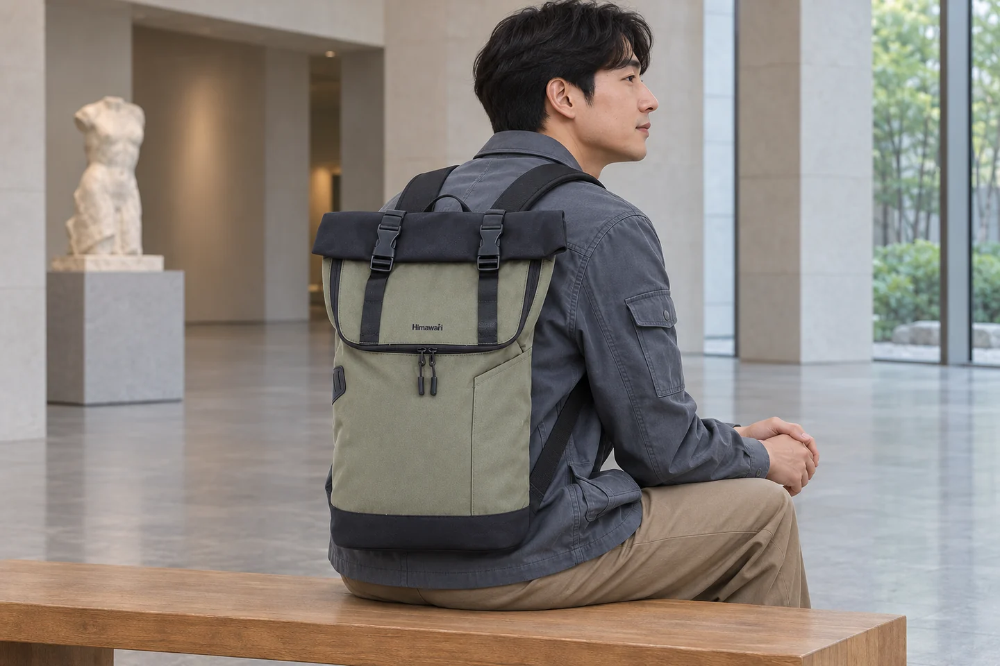
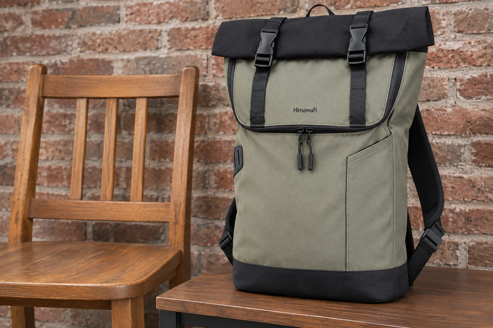
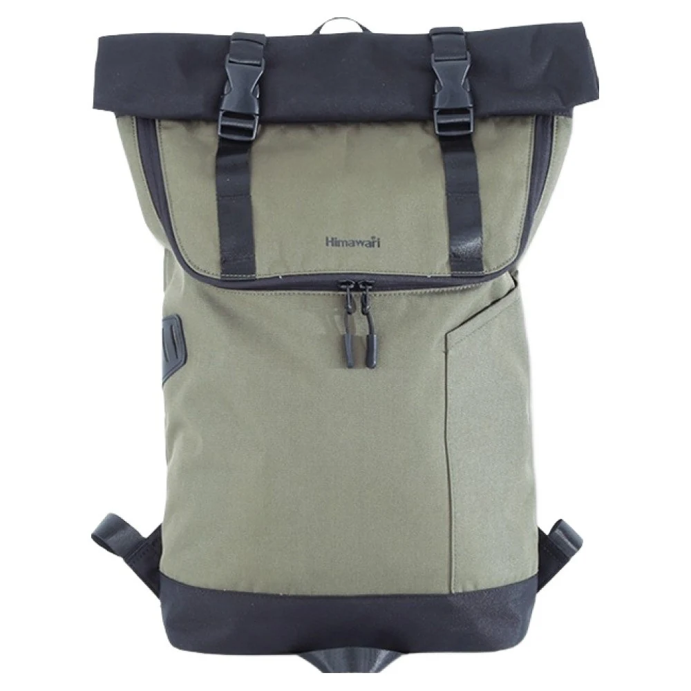

긴 백팩을 멘 채 앉으면 밑단이 좌판에 닿을까

정류장 벤치에 잠깐 앉으려는데 어깨에 멘 가방부터 좌판에 닿는 날이 있습니다. 손을 안 짚고 그대로 앉으려 하면 가방이 위로 밀려 어깨끈의 당기는 곳이 바뀔 수 있습니다. 등받이가 있는 의자라면 가방 밑단보다 앞판이 뒤쪽에 닿았을 수도 있습니다. 제조사 외부 높이가 50cm인 No.1682 카키를 예로 그 두 접점을 봅니다. 먼저 닿는 곳을 알아두면 몸을 낮추기 전에 가방을 벗을지 결정하기 쉽습니다.
등받이 없는 벤치에서는 좌판과 밑단부터 봅니다
No.1682는 접힌 어두운 윗단과 카키 몸판이 이어지고 아래에 어두운 밑단이 있습니다. 가방을 등에 메면 밑단이 어디까지 내려오는지는 몸길이와 끈을 맞춘 상태에 따라 달라집니다. 사진처럼 몸판이 긴 가방은 앉기 전에 벤치 가까이에서 아래쪽 가장자리가 어느 높이에 오는지 확인해 볼 수 있습니다. 제조사 외부 높이만으로 내 몸에서의 위치까지 알 수는 없습니다. 끈을 잘 맞춘 뒤 서 있을 때 어두운 밑단을 먼저 보고 내 뒤에 놓인 좌판의 높이와 비교합니다.
평소처럼 멘 상태에서 벤치 옆에 서 봅니다. 몸을 낮췄을 때 밑단이 좌판 쪽으로 내려오나요? 몸을 낮출 때 가방이 좌판 모서리에 먼저 닿으면 가방이 기대는 위치도 달라집니다. 가방이 먼저 받쳐지면 앉는 동작을 잠시 멈추고 가방을 벗어 둘 자리를 봅니다. 뒤쪽이 열린 벤치에서도 낮은 봉이나 틈이 있는지 확인하면 가방 끈을 앉은 채로 다시 빼내는 일을 줄일 수 있습니다.

등받이가 생기면 가방의 두께가 더해집니다
등받이 의자는 좌판만 보는 것으로는 부족합니다. 가방이 등에서 뒤로 나온 만큼 의자 깊이 가운데 몸에 남는 자리가 달라집니다. No.1682의 외부 폭 14cm는 카탈로그에 적힌 전체 바깥 치수입니다. 의자에서 실제로 차지할 앞뒤 여유는 내용물이 만든 굴곡과 메고 있는 방향을 따로 봐야 합니다. 여밈을 살펴보면 윗부분에 버클이 있고 중간에 지퍼 손잡이가 있습니다. 등받이에 가까워지는 자리를 보려면 앞판 끝뿐 아니라 돌출된 부품이 어느 높이에 있는지도 봅니다. 벤치에서 아무 데도 닿지 않았던 가방이라도 작은 등받이에서는 몸판이 먼저 닿을 수 있습니다.
반대로 낮은 등받이는 가방의 위쪽을 비켜 가고 넓은 밑단 가까이에 닿을 수 있습니다. 등받이 높이와 좌판 깊이가 다르면 같은 가방을 메고도 서로 다른 곳이 닿습니다. 의자에 몸을 맞추려고 가방을 등에서 옆으로 크게 끌어내면 끈이 어깨에서 비틀릴 수 있고 옆자리에 가방이 나올 수 있습니다. 가방을 손에 들고 앉을 수 있는지, 내려둔 가방이 통로에 걸리지 않는지를 앉기 전에 보면 방향을 선택하기 쉽습니다. 손이 비어 있고 옆 바닥에 가방 전체를 둘 수 있다면 먼저 벗어 두는 쪽이 간단합니다.
가방을 벗을 때 두 자리의 조건을 비교합니다
등받이 없는 넓은 벤치에서 잠깐 쉬는 경우에는 가방 밑단이 닿는지와 옆 사람 자리까지 가방이 들어가는지 살펴봅니다. 가방을 벗어 옆에 둘 때는 보조 끈이 밑에 말려 들어가지 않도록 손잡이를 놓기 전에 봅니다. 좌판이 좁거나 뒤가 열린 자리는 가방 한 면을 모두 받칠 수 있는지도 확인합니다. 가방 무게를 좌판에 실을 곳이 없다면 앉은 뒤에 억지로 뒤쪽에 끼우지 않아도 됩니다. 발밑에 놓을 수 있는 평평한 자리나 다른 의자가 있는지 살펴봅니다.
등받이 의자에 오래 앉아 있다면 등받이에서 몸이 지나치게 앞으로 나오는 이유도 가방에서 찾을 수 있습니다. 옷이 두꺼운 날에는 등에 멘 가방이 의자 뒤로 더 나온 만큼 몸이 앞으로 밀릴 수 있습니다. 이때는 걷는 동안에 맞춰 둔 끈 길이를 그대로 두고 가방을 먼저 벗어 보는 편이 간단합니다. 자리를 뜰 때는 평소 겉옷 위에서 끈이 놓이는 위치를 확인합니다. 가방을 벗기 쉬운 자리에서 잠깐 멈춘 다음 어깨끈을 빼고 손잡이로 들어 두면, 앉는 동작과 가방을 옮기는 동작도 덜 겹칩니다.

제품 사진을 볼 때 밑단을 따로 찾습니다
모델을 고를 때에는 어깨 끝에서 가방 전체가 얼마만큼 내려오는지 볼 수 있는 옆모습 사진이 도움이 됩니다. 실제 원본에 표시된 윗부분과 어두운 밑단의 위치를 눈에 익혀 두면 착용 연출이나 다른 각도의 사진에서도 같은 부위를 찾을 수 있습니다. 가방을 멘 사람의 키와 끈 길이를 알 수 없다면 그 사진을 내 좌판 높이와 수치로 바로 맞추기는 어렵습니다. 내 가방을 이미 쓰고 있다면 평소 외투 차림으로 메고 좌석 옆에서 비교하는 편이 실제 동작에 가깝습니다. 몸을 낮추기 전에 밑단이 좌판 쪽에 오는지부터 확인합니다.
옆에서 서서 볼 때 가방이 엉덩이 아래로 내려와 있으면 좌판 끝에도 그 높이의 공간이 있는지 봅니다. 평소 좌석에 닿는 방향으로 돌아서면 옆에서 봤을 때와 맞닿을 곳이 다를 수 있습니다. 받침대가 튀어나온 의자라면 등받이 아래의 열린 부분까지 확인합니다. 가방을 벗고 앉을 때에도 다시 들 손잡이가 몸쪽을 향하는지 살피면 좁은 자리에서 가방을 돌릴 일이 줄어듭니다.
앉기 직전에는 의자 모양에 따라 볼 곳을 바꿉니다. 등받이가 없을 때는 밑단과 좌판 높이가 먼저 눈에 들어옵니다. 깊이가 얕은 의자에서는 가방 앞판과 등받이의 간격도 중요해집니다. 두 자리를 따로 보면 같은 가방으로도 어느 쪽에서 먼저 벗어야 할지 정할 수 있습니다. 앉았다가 금방 일어날 때에는 가방을 어디에서 다시 집어 들지까지 생각해 두면 끈에 발이 걸리거나 뒤쪽으로 손을 뻗는 일을 줄일 수 있습니다.